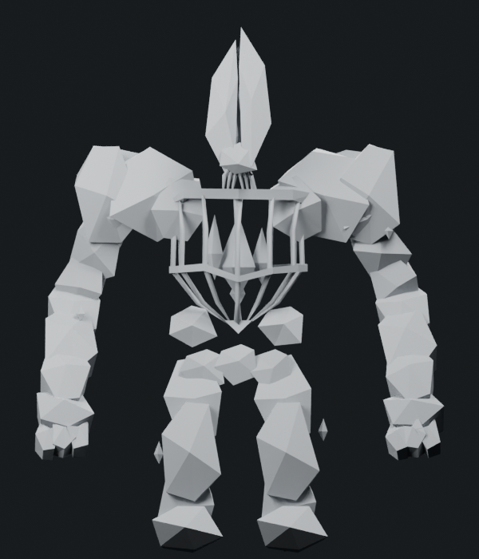
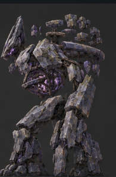
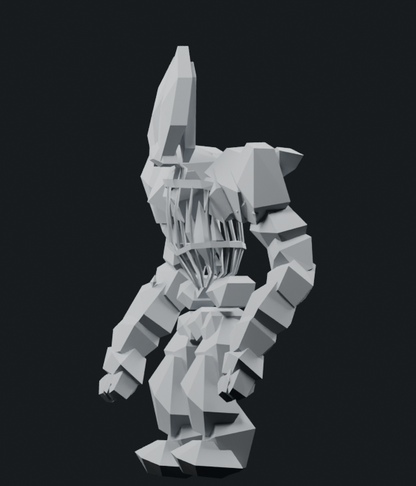
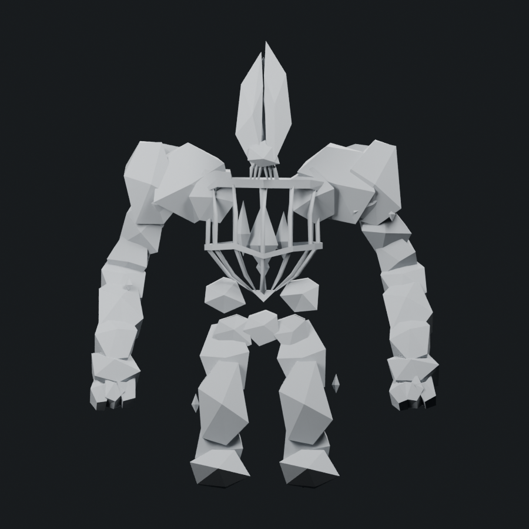

The shoulder plates now slope and hang more steeply. The elbows sit farther back and the wrists project forward; arm plates follow those angles in three dimensions, with individual tapered stone sections. The leg stance is slightly closer, the knees project forward, and the fingers are shorter and seated into the palms. Foot thickness was restored after the first render read too flat. The cleft head and both torso rings remain.
Front/head left, back right in every side view. The same guarded cameras are used for the preserved r7 and current r8 comparison.
1,800 triangles · 1.500× native Stone Golem · soft cap 1,800. One mesh/material, four 512px maps, eight original bone identities and seven retained actions. Fifty existing body supports plus eight new arm/digit root contacts pass 35 sampled poses. Proximal arm roots stay seated in the shoulders, with a sparse Body/Arm blend below them. This remains a silhouette candidate; surface texture detail is on hold.






The concept's finer rock fragmentation and silhouette irregularity remain unfinished. The user's “still so far off” remains the review state; neither positive progress nor passing geometry checks establishes adequate boss acceptance. Native loading, full animation deformation and live performance are separate pending checks.
Editable Blender model · Skinned export · Surface view · Torso close-up · Attack pose · Geometry/export checks · All support checks · Arm/digit root and blend checks · Closing-face checks · Changes · Saved proportions · Camera orientation · Source provenance